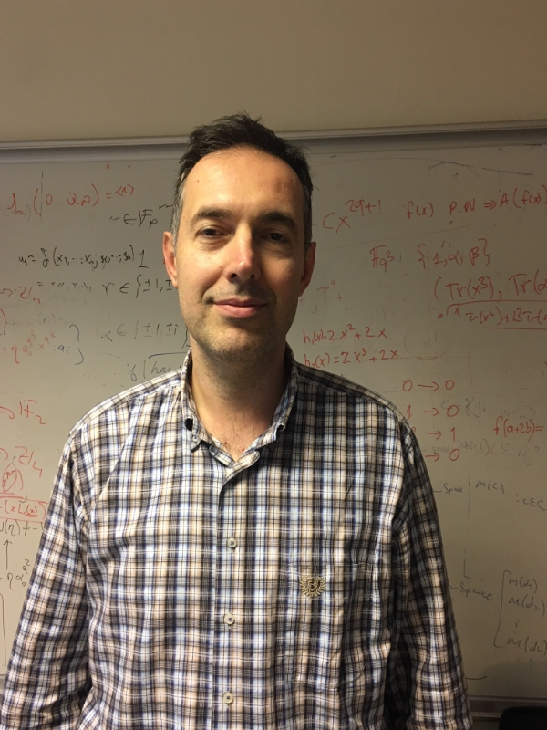
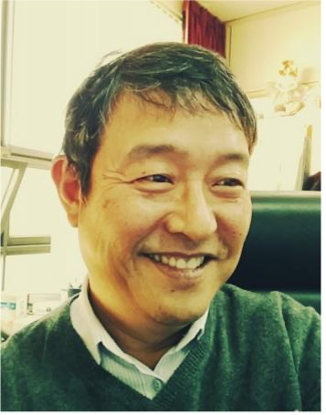
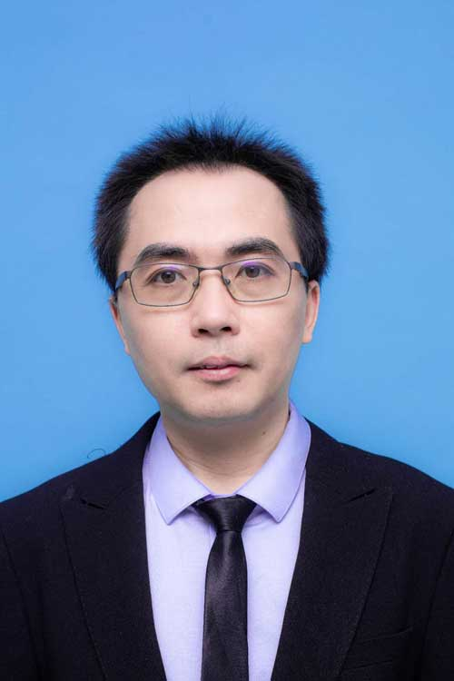
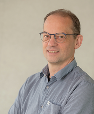

Chunlei Li (Senior Member, IEEE) received the Ph.D. degree from the University of Bergen, Norway, in 2014. He was a Post-Doctoral Researcher with the University of Stavanger, Norway, from 2015 to 2017. He has been a Researcher with the Department of Informatics, University of Bergen, Norway, from 2017 to 2018, where he was an Associate Professor from 2018 to 2024 and has been a Professor since 2024. His research interests include sequence design, coding theory, and cryptography, particularly focusing on the fundamental problems and the interplay of these fields. He was the Program Co-Chair of the Workshops on Mathematical Methods for Cryptography in 2017, the Sequences and Their Applications (SETA) in 2020 and 2024, and Norwegian Conference on Information Security in 2024 and 2025. He was a general co-chair for the European School of Information Theory. He served as a Program Committee Member for several workshops, including the International Workshops on the Arithmetic of Finite Fields (WAIFI 2018), SETA 2018/2026, Boolean Functions and their Applications (BFA 2020/2021/2022/2023/2024/2025/2026), Signal Designs and Applications (IWSDA 2019/2022/2025), Workshop on Coding and Cryptography (WCC 2022), and the IEEE Information Theory Workshop (ITW 2023/2024). He serves on the editorial board for Advances in Mathematics of Communications (AIMS) journal and the Designs, Codes and Cryptography (Springer) journal. He has been serving on the board of Norway Section Chapter of the IEEE Information Theory Society since 2024.
Title:
Sequences with good periodic and/or aperiodic autocorrelation
Abstract
Sequences with optimally low periodic autocorrelations share deep, intrinsic connections with combinatorial designs, character sums over finite fields, as well as number theory. In digital communications, they serve as the cornerstone of sequence families with low periodic correlations, sequences with low aperiodic correlation, as well as sequences with low ambiguity for the emerging integrated sensing and communication systems. This talk will start by reviewing the foundational constructions, developments, and theoretical interconnections of sequences with optimally low periodic autocorrelation. We then present recent studies on polyphase sequences with zero autocorrelation, achieved via a permutation-based interleaving technique and raise some open problems for future research.

Ferruh Özbudak is a Professor in the Faculty of Engineering and Natural Sciences at Sabancı University, Istanbul, Turkey. He obtained his B.Sc. in Electrical and Electronics Engineering (1993), M.Sc. in Mathematics (1995), and Ph.D. in Mathematics (1997), all from Bilkent University, Ankara, Turkey. Prior to his appointment at Sabancı University, he served as a professor of mathematics at Middle East Technical University (METU), where he also chaired the Cryptography Program at the Institute of Applied Mathematics for more than 15 years. He has received several recognitions, including the Mustafa Parlar Education and Research Foundation Research Award (2001), the Turkish Academy of Sciences Young Scientist Award (2004), the Prof. Masatoshi Gündüz Ikeda Science Award from the Mathematics Foundation (2009), the Alexander von Humboldt Research Fellowship (2012), and the Newton Mobility Grant Award from The Royal Society, UK (2018). He has visited several universities for research collaboration, including Anhui University in China, Universität Duisburg-Essen in Germany, National University of Singapore, Nanyang Technological University in Singapore, Tulane University in the USA, Aalborg University in Denmark, Loughborough University in the UK, and Otto von Guericke University Magdeburg in Germany. He is currently serving as an editor for Advances in Mathematics of Communications and IEEE Transactions on Information Theory. His research interests include algebraic curves, finite fields, coding theory, and cryptography.
Title:
Title to be announced.
abstract
Abstract to be announced.

Hong-Yeop Song received the B.S. degree in electronic engineering from Yonsei University, Seoul, South Korea, in 1984, and the M.S.E.E. and Ph.D. degrees from the University of Southern California (USC), Los Angeles, CA, USA, in 1986 and 1991, respectively. He spent two years as a Research Associate with USC. He was a Senior Engineer in Standard Team of Qualcomm Inc., San Diego, CA, for two years. Since September 1995, he has been with the Department of Electrical and Electronic Engineering, Yonsei University. His research interests include digital communications and channel coding, design and analysis of various pseudorandom sequences for communications, and cryptography. He is a member of the National Academy of Engineering of Korea (NAEK), the Mathematical Association of America (MAA), Korean Mathematical Society (KMS), KICS, IEIE, and KIISC. He was awarded the 2017 Special Contribution Award from Korean Mathematical Society and the 2021 S. J. Choi Award from Korean Government, both for his contribution to the global wide-spread of the fact that S. J. Choi (1646-1715) from South Korea had discovered a pair of orthogonal Latin squares of order nine much earlier than Euler. He has participated to SETA almost every year since 2001 (Bergen, Norway) and co-editied Proceedings of SETA 2004 and 2006. He has been serving for IEEE IT Society Seoul Chapter as the Chair from 2009 to 2016. He served as the General Co-Chair for IEEE ITW 2015, Jeju, South Korea.
Title:
Connection between Florentine rectangles and the family of perfect polyphase sequences with optimum crosscorrelation
abstract
Florentine rectangles (circular or straight) had been studied earlier in 1980's as some new combinatorial structures by Professor S. W. Golomb and his group and was a main subject of my PHD thesis in 1991 and published as a section in CRC Handbook of Combinatorial Designs in 1996. After about 25 years laters, when I have discovered that the Ferma-quotient sequences of length p^2 is a perfect seqeuence and also that there exists a way to construct family with optimum crosscorrelation, I have noticed some form of permutations play an important role in connection with the size of the family. Pretty soon, it was identified that the set of permutations is exactly the rows of a circular Florentine arrays. We were very much surprised that the subject matters about 25 years ago reappear as some key elements of the current research. We have summarized the result and submit in Jan. 2019. It was finally published in Nov. 2021. In the mean time, another independent discovery seemed to happen from Bergen, Norway, and the result was presented in IEEE ISIT 2020 on the same connection. So far, the main story is the relation between the size of the perfect polyphase sequence family of ODD length with optimum crosscorreation and the number of rows in a circular Florentine array. Such a connection is now well-known and a lot of results on the families of sequences use this connection. Recently, we were able to generalize this into the cases for EVEN length and successfully identified the connection between a straight (not circular) Florentin rectangle and the size of family of perfect sequences with optimum crosscorrelation. This talk will briefly summarize all these.

Chunming Tang is a Research Professor at the School of Information Science and Technology, Southwest Jiaotong University. He received his Ph.D. degree from Peking University in July 2012, and subsequently worked as a postdoctoral researcher at the University of Paris VIII and the Hong Kong University of Science and Technology (HKUST). His primary research interests focus on coding and cryptographic theory oriented towards cyberspace security. As an independent, first, or corresponding author, he has published over 80 papers in prestigious journals within his field, including more than 30 papers in IEEE Transactions on Information Theory, the flagship journal in coding and cryptography. In recognition of his outstanding contributions to the field of cryptographic functions, he was awarded the George Boole Prize, a distinguished international academic award in cryptography. His research achievements have also earned him the Second Prize of the Natural Science Award from the Ministry of Education of China (ranked 2nd out of 4). Furthermore, he serves as the Principal Investigator (PI) for both Key and General Programs funded by the National Natural Science Foundation of China (NSFC).
Title:
Beyond Classical Properties: Recent Advances and New Perspectives on m-Sequences
abstract
Maximum-length sequences (m-sequences) serve as fundamental building blocks in sequence design. They are classically characterized by their span, decimation, shift-and-add, balance, run, and ideal two-level autocorrelation properties. Because of these optimal pseudorandom features, m-sequences have been extensively applied in spread-spectrum communications, cryptography, radar systems, and coding theory. Despite being well-studied classical mathematical objects, the evolving demands of next-generation technological systems have sparked renewed interest in this field. In this talk, we will present recent advances in the study of m-sequences.

Arne Winterhof received his Ph.D. in mathematics from the Technical University of Braunschweig in 1996. In 2001, he obtained his habilitation from the University of Vienna. He was awarded the Hlawka Prize in 2004 and the Advancement Award of the Austrian Mathematical Society in 2010. From 1999 to 2002, he was a research scientist at the Institute of Discrete Mathematics of the Austrian Academy of Sciences in Vienna, and from 2002 to 2003 at Temasek Laboratories at the National University of Singapore. Since 2003, he has been with the Johann Radon Institute for Computational and Applied Mathematics of the Austrian Academy of Sciences in Linz. He serves on the editorial boards of Cryptography and Communications: Discrete Structures, Boolean Functions and Sequences, Journal of Uniform Distribution Theory, and Advances in Mathematics of Communications. He was co-editor of the Sequences and Their Applications (SETA) proceedings in 2008 and 2014. His research focuses on finite fields and their applications, particularly the analysis of pseudorandom sequences. He has published more than 160 papers in international refereed journals and conferences and co-authored the monograph Applied Number Theory with Harald Niederreiter. He is widely recognized for his contributions to the theory of pseudorandomness and finite fields.
Title:
Pseudorandomness of algebraic binary sequences
abstract
Any binary sequence ${\cal S}=(s_n)_{n=0}^\infty$, $s_n\in \{0,1\}$, may be identified with
i) a formal power series over the finite field $\mathbb{F}_2$ of two elements $G_{\cal S}(x)=\sum_{n=0}^\infty s_n x^n\in \mathbb{F}_2[[x]]$,
ii) a $2$-adic integer $G_{\cal S}(2)=\sum_{n=0}^\infty s_n2^n\in \mathbb{Z}_2$,
iii) a real number in the unit interval $\frac{G_{\cal S}(2^{-1})}{2}=\sum_{n=0}^\infty s_n2^{-n-1}\in [0,1]$.
We study (not ultimately periodic) sequences for which either
i) $G_{\cal S}(x)$ is algebraic over $\mathbb{F}_2(x)$ (such sequences are called automatic sequences), for example, the Thue-Morse sequence $(0,1,1,0,1,0,0,1,\ldots)$, that is,
$G_{\cal S}(x)^2+\frac{1}{x+1}G_{\cal S}(x)+\frac{x}{(x+1)^3}=0$,
ii) $G_{\cal S}(2)$ is algebraic over $\mathbb{Q}$ (embedded in $\mathbb{Q}_2$), for example, the sequence identified with $\sqrt{-7}=1 + 2^2 + 2^4 + 2^5 + 2^7 +\cdots$,
iii) or $\frac{G_{\cal S}(2^{-1})}{2}$ is algebraic over $\mathbb{Q}$ (embedded in $\mathbb{R})$, for example, the sequence identified with $\sqrt{\frac{1}{2}}=\frac{1}{2}+\frac{1}{8}+\frac{1}{16}+\frac{1}{64}+\cdots$.
We discuss the behaviour of these sequences with respect to several measures of pseudorandomness, including
i) the $N$th linear complexity,
ii) the $N$th $2$-adic complexity,
iii) the $N$th rational complexity.
We also study subsequences such as the Thue-Morse sequence along squares.